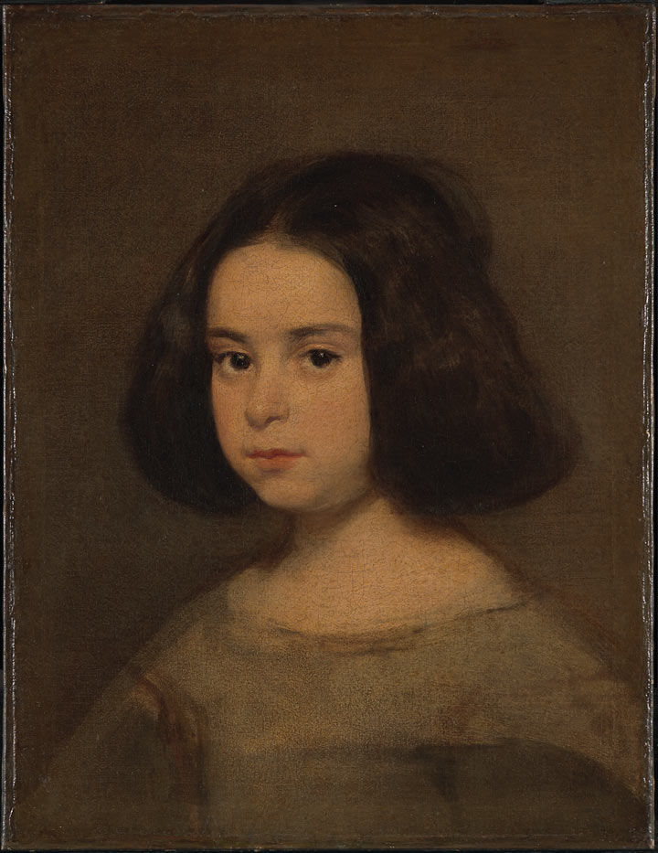

Once upon a time a young little girl named "Frist Day of Light" had a dream of becoming a strong holy woman. She wanted to follow the steps of her mother and be a person that her people respected dealry and looked to for help. As she grew older the relationship with her mother turned sour. She could never please her mother with anything she did. When she failed miserably it was door for her mother to step through and never close, even with the efforts of First Day of Light trying to do better her mother contuine to shame her.
When First Day of light turned 18,she had an awaking of her soul. She knew she deserved better and to be respected for her hard work and efforts to being the best woman she could be despite her failings. She knew it was time to leave the nest and start a new chapter of her life. Although leaving home wasn't easy and she knew she couldn't tell her mom, she started to plan it anways. She was scared and nervous of course because what if her mother punished her and never allowed her to leave home again. Coming closer to the time to actually start taking action, the relationship between her and her mother got even worse. To the point where they got in a verbale fight. Her mother was being really mean, so First Day of Light decided to stand up for herself but her mother wasn't having it. Once again cealing the vice of First Day of light away.
Later that night after the fight, Frist Day of Light cried and cried until she couldn't anymore. She began to question everything around her and weather or not it was worth her time here on earth. It got very close to the decision of her leaving this earth but a dream she had when she was little stopped her. The dream reminded her of the purpose and the future that awaits her if she stayed. She ended up whipping away her tears while she packed all her belongings to leave her home and chase her dreams. The next morning she said good prayers and I love you to her sleeping mother and left. First Day of Light started her new life at the sacrifice of her comfortablity. Till this day she's still chasing her dreams and acheving goals, setting a good example for her people. The relationship with her mother is even healing, pushing First Day of Light into the true divine, strong holy woman she is.
Other Website Pages
Page1 Page3